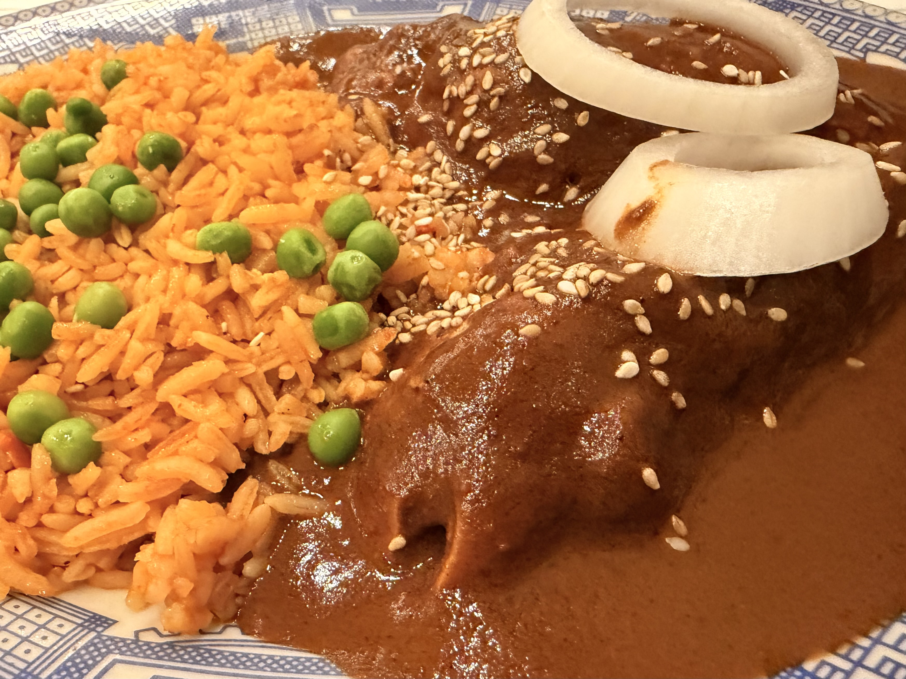

メキシコシティは、観光地から観光地へ移動するだけではもったいない。路地を歩いていると、路上で朝食を売る屋台、壁を埋め尽くすグラフィティ、テントを張った行商人——ここには観光地には出てこない街の表情がある。
まずはメキシコの朝食から
メキシコシティ滞在中、歴史地区近くのローカルなレストランで食べた朝食が忘れられない。注文したのはウエボス・コン・チョリソ（Huevos con Chorizo）。大きなトルティーヤのような生地の上に、スパイシーなチョリソと目玉焼き、黒豆のペーストが乗った一品だ。量が多くてボリューム満点。コスタリカのガジョピントとは違う、メキシコ独自の朝食文化を感じた。

ラ・シウダデラ——工芸品市場
歴史地区から西へ少し歩くと、メルカード・デ・アルテサニアス・デ・ラ・シウダデラという工芸品市場がある。元要塞（シウダデラ＝小さな城）の建物を利用した市場で、メキシコ各地の民芸品が集まっている。タラベラ焼きのタイル、オアハカの黒陶器、ウイチョール族のビーズ細工、銀細工——一日いても飽きないほどの種類だ。
観光地の土産物屋より種類が豊富で、職人と直接話しながら選べるのが醍醐味。


革命記念塔（Monumento a la Revolución）
歴史地区から西へ歩くと、どっしりとしたアーチ型の記念塔が見えてくる。革命記念塔は、もともとポルフィリオ・ディアス政権下で国会議事堂として設計されたが、1910年に革命が勃発し建設が中断。後にラサロ・カルデナス大統領のもとで革命の英雄を顕彰する記念塔として完成した（1938年）、高さ67mの建造物だ。塔の内部にはパンチョ・ビリャやフランシスコ・マデロなど革命の英雄たちが眠っており、上部の展望台に上がることもできる。
観光客よりも地元の人が多く、散歩やスケートボードを楽しんでいた。広場には屋台やテントが並び、普段着のメキシコシティらしい空気が漂っていた。


ポジョ・コン・モーレ
メキシコシティで食べた料理の中でも特に印象的だったのがポジョ・コン・モーレ（Pollo con Mole）だ。チョコレートをベースに20種類以上のスパイスを組み合わせた黒いソース「モーレ・ネグロ」をチキンにかけた料理で、メキシコを代表する国民食のひとつ。
甘みと辛み、スパイスの複雑な香りが渾然一体となったモーレは、初めて食べると「これが料理の味なのか」と少し戸惑うほどだ。スパイス文化に慣れている中米経験者でも、メキシコのモーレは別格だと感じた。地元のレストランで頼むと、大抵ライスとトルティーヤが一緒についてくる。
実は初めてメキシコシティを訪れたときにも食べていて、忘れられないほど美味しかった料理だった。今回もどうしても食べたくて店を探し、最終的にたどり着いたのがCasa de los Azulejos（カサ・デ・ロス・アスレホス）。建物の外壁を青いタイルが覆う歴史的な邸宅で、その中にレストランが入っている。

街のグラフィティ文化
メキシコシティの路地を歩いていると、至るところにグラフィティが描かれている。単なる落書きではなく、社会へのメッセージや芸術的な表現を持つものも多い。政治的なスローガンが書かれた壁の隣に、精緻なイラストが描かれていたりと、その混在ぶりがいかにもこの街らしい。
壁一面を使ったストリートアートや壁画文化はメキシコシティ観光の見どころのひとつで、フォトスポットとして訪れる人も多い。ニカラグアのレオン（サンディニスタ革命の壁画）とはまた違う、都市的なメッセージのあり方を感じた。

メキシコシティは「でかい」。移動距離、建物の規模、交通量、人口密度——すべてのスケールが中米とは桁違いだ。コスタリカを「大きな国」と思っていた自分が、ここに来て急に田舎の感覚になった。